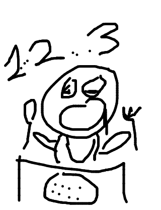
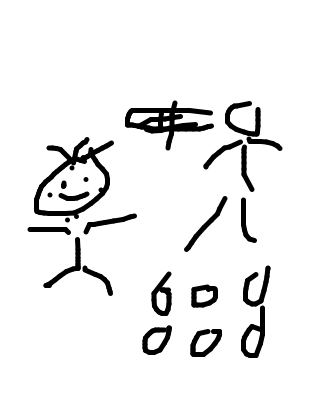

so jackcheng drew...

so irondavy wrote...
How someone with OCD enjoys a meal.
so rickyc drew...
so matt wrote...
That poor baby! He's drooling, ready to eat his peas but his parents are forcing him learn to count.
so mike drew...
so tasia wrote...
Freckled children like to play Twister too.